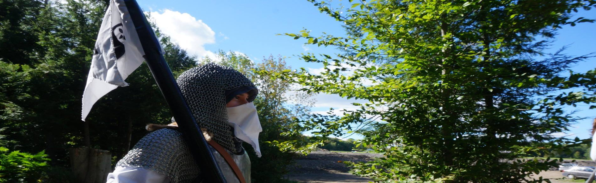

Description: Les sentiers de loubli est un grandeur nature fantastque,steam punk des alentours de St-lazar. Pour le cout de 45$ le dinner,souper et dejeuner est fournit avec le jeu inclus XD
Resume: Athérius, au nord, croit en l'avènement de la technologie. La savoise, au sud, croit en la magie et les dieux. Ainsi, entre les deux se trouve une terre ancestrale, hostile par ses nuits où sortent les morts-vivants, qui se nomme Sylvafère. Comme elle est peu habitée, la région est pleine d'opportunités. Bienvenue, cher ami.